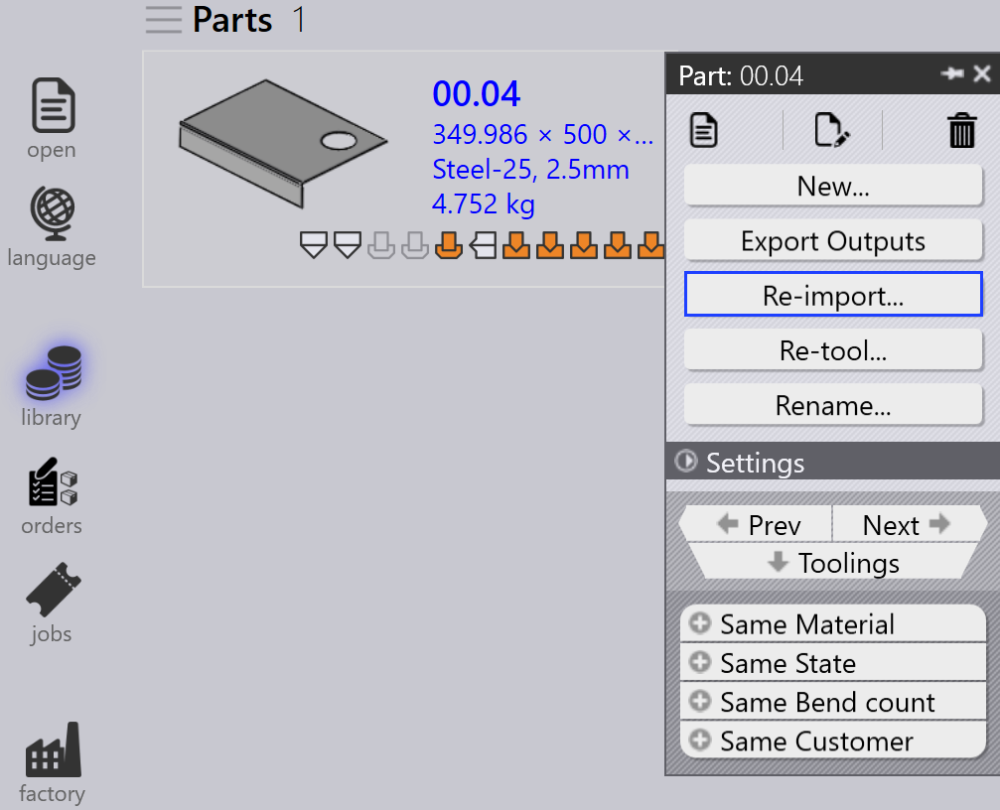

零件面板
本节说明与零件相关的操作，如 重新导入…、重新装备…、重命名…、导出输出 等，用于管理零件实例。

|
|


重新导入…
-
右键单击任何零件并点击 重新导入…。

-
清除所有机床上所选零件的所有工装实例，包括自动工装和手动工装实例。
-
删除现有输出文件（CAD、Bend 和 Cut）。
-
重新导入零件，并对所有机床应用新的 CAD 验证和工装。
-
根据更新的工装结果创建新的输出文件。
重新装备…
-
右键单击任何零件并点击 重新装备…。

-
默认情况下选中所有机床，并按激光、冲床、折边机和折弯机分组。
-
点击 确定 继续。这将删除所选机床的自动工装和手动工装实例，并删除相关的输出文件。
-
选中 保留现有输出 复选框后，只有先前删除输出的零件才会重新工装，其他输出保持不变。如果未选中，则会删除所选机床的所有输出文件并在重新工装期间重新生成。
|
重命名…
本节说明如何在 TruSmartCAM 中重命名一个或多个零件。
-
右键单击零件并点击 重命名…。

-
出现重命名确认对话框，显示当前零件名称。
-
输入新名称并点击勾选 ✓ 图标确认，或点击叉号 ✗ 图标取消重命名操作。

-
要重命名多个零件，请选择所有所需的零件，然后右键单击其中任何一个并点击 重命名…。
-
出现确认对话框，显示所选零件的总数。
-
对于每个零件，输入新名称并点击勾选 ✓ 图标逐个确认。
-
如果误选了任何零件，请点击叉号 ✗ 图标取消。或者，您可以右键单击零件并点击 取消重命名 以跳过重命名。
导出输出
此选项将零件输出导出到 出厂设置 中配置的目标。（请参阅 Bend Settings 和 Cut Settings）
输出位置在各自的输出设置中针对折弯、折边和切割单独定义。与折弯、折边和切割操作关联的所有工装都会导出整个零件。

如下所示，导出的文件保存在指定的文件夹中（例如，C:\PraxData\Out\Reports）。

| 导出的文件取决于操作类型。对于折弯和折边操作，会生成 NC 文件和报告。对于切割和冲压操作，仅导出零件文件。 |
零件分配材料
状态为 材料未分配 的零件需要在进一步处理之前进行更新。以下步骤说明如何分配材料。
-
右键单击显示状态 材料未分配 的零件并选择 分配材料。

-
分配材料 窗口打开。

-
该对话框有四个部分：
-
建议 - 根据导入零件的厚度自动建议原材料。
-
所有材料 - 列出 TruSmartCAM 中定义的所有材料类型。
-
所有原材料 - 显示系统中可用的所有原材料。
-
用过的原材料 - 显示最近使用的原材料以便快速访问。
-
-
您可以使用顶部的 搜索… (Ctrl+F) 字段快速查找材料。例如，输入"steel"以显示三个部分中所有匹配的材料。
-
从筛选列表中，从原材料列表中选择所需的材料（例如，Steel-25）。
-
所选材料将分配给零件。
轧制方向
轧制方向 指的是零件中纹理的方向，这会影响零件的切割和处理方式。此选项允许您为零件库中的零件指定 轧制方向。根据所选方向，零件将以正确的方向放置在可用机床上进行切割。
-
右键单击零件库或作业窗口中的任何零件磁贴。
-
选择首选的轧制方向：
-
无
-
水平
-
垂直

-
-
零件会根据所选的轧制方向自动为所有可用的切割机床重新工装。
-
零件磁贴将显示所选的轧制方向，如下所示：